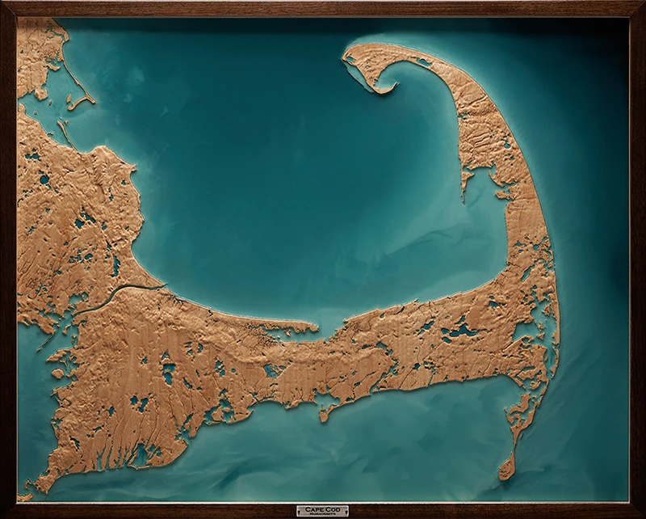
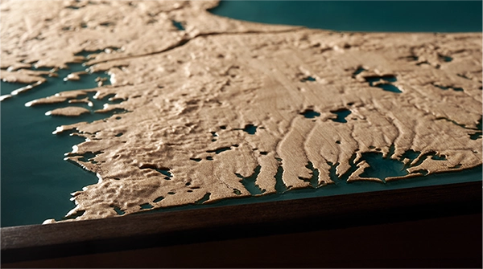
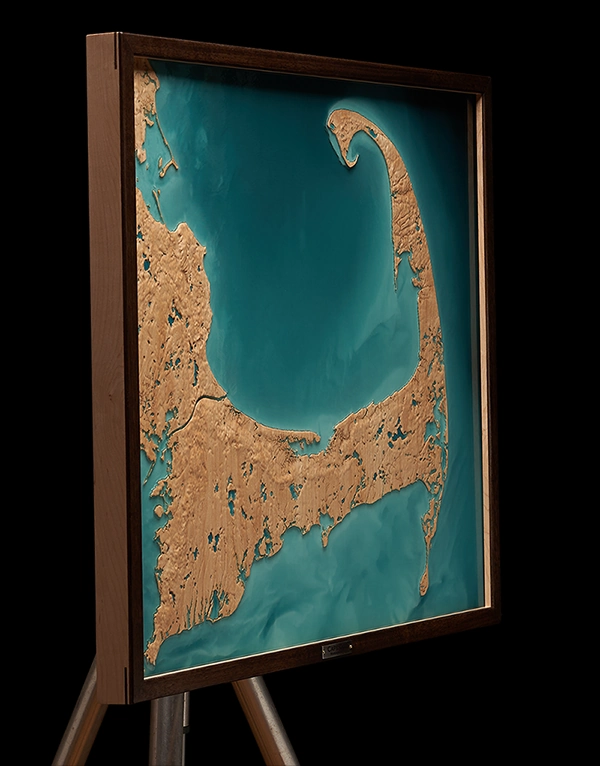

Cape Cod
Massachusetts
Relief of Cape Cod, a low glacial landscape of sand, ponds, marshes, and inland waterways, carved in maple and framed in walnut. The carved landform traces the cape’s subtle elevations and tributary systems extending inland. Translucent resin defines ponds, wetlands, tidal areas, and surrounding water, placing the cape within a larger hydrological field.
Shaping of Place
Cape Cod is a young, dynamic glacial landscape, formed from moraine and outwash deposits left by the retreat of the Laurentide Ice Sheet. Its visible geology is not New England’s renowned granite bedrock, but unconsolidated sand, gravel, and scattered boulders. Ocean waves, wind, and moving sediment continue to reshape the cape’s low, shifting form.
Because the ground is porous, water moves through the cape as much as across it. Rain enters the sandy deposits, feeds the freshwater lens below, and reappears in low areas as ponds, wetlands, springs, and streams. The coast is not only an edge between land and sea, but part of a larger hydrological field extending inland.

Cape Cod relief, full composition.

Detail of Mashpee Outwash Plain.

Installation perspective.
Cape Cod’s defining character lies in its subtlety. The place is familiar as coastline, but its form is often quiet: low rises, shallow drainage, ponds, marshes, and water held close to the surface. The piece began with that challenge, making a landscape of small changes legible without overstating it
Elevation changes across the cape are often measured in feet, so the carving needed careful vertical exaggeration for the landform to remain readable in relief. Hard maple was chosen for its fine grain and responsiveness to carving, suited to both shallow terrain and precise etched linework
Laser etching was used to extend waterways inland through the carved surface. Ponds, marshes, tidal creeks, and tributary lines were treated as part of the cape’s structure, emphasizing how much of the low landscape is read through water. The hydrology needed to remain present without overwhelming the carved landform, so the piece could stay low, restrained, and closely tied to Cape Cod’s character.
Artist's Note